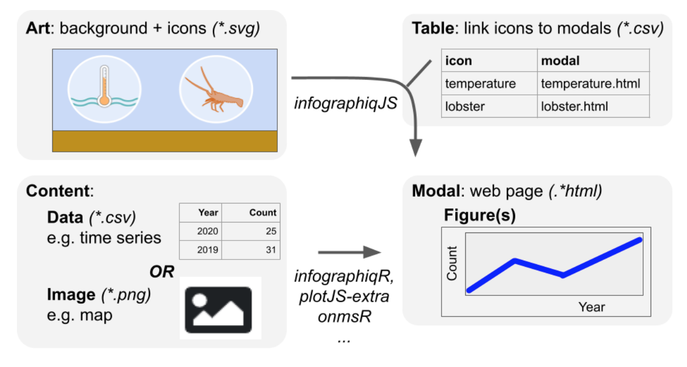

Guide to Infographiq
2021-06-16
Chapter 1 Introduction
This document is a guide to using the Infographiq method for displaying data in a user-friendly way. The Infographiq method uses a combination of Javascript and R to produce clickable art that acts as an interface for users to access scientific data. An illustration of the Infographiq method can be seen below.

This guide details how to prepare:
- an Infographiq-ready image,
- the “modal windows” in which data is shown,
- the link table that connects the image with the modal windows,
- a web page to embed an Infographiq-enabled image.
You can find a demonstration of Infographiq, showing many of the options available with the associated Javascript library, here.
Infographiq can also display data in modal window form via a user-clickable table. In this demonstration table, click on any row to see the associated modal window.